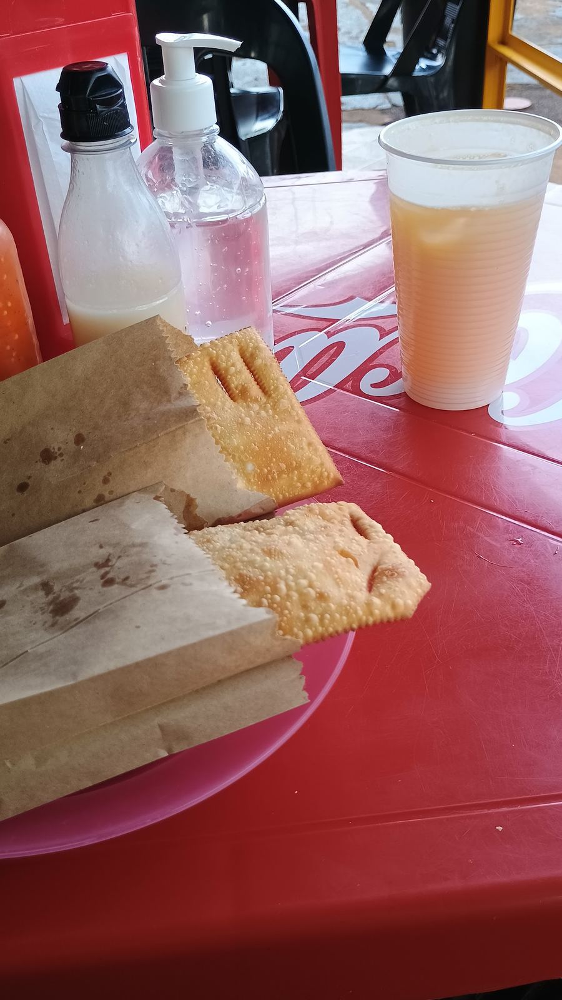
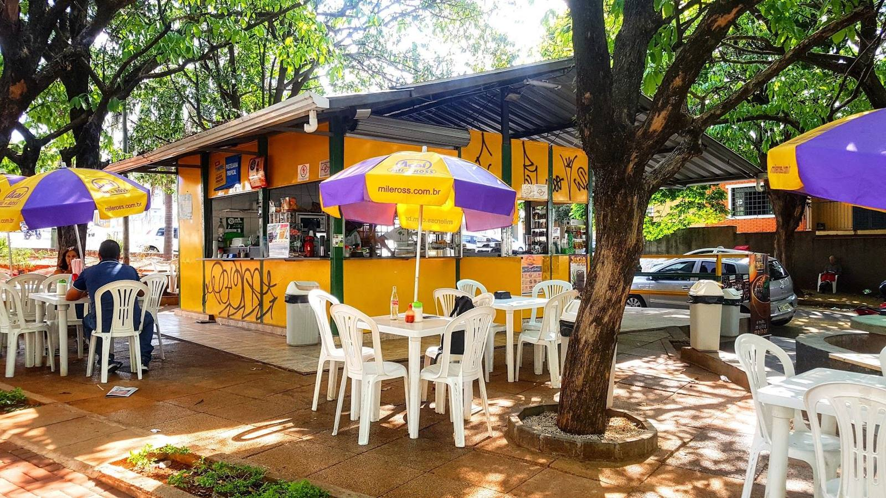
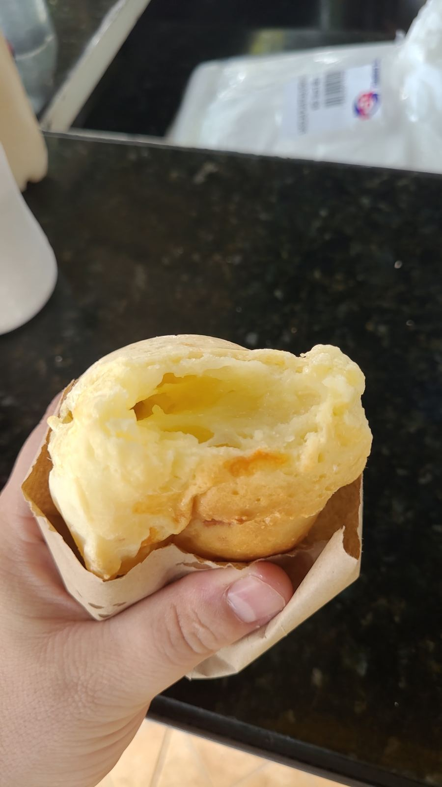
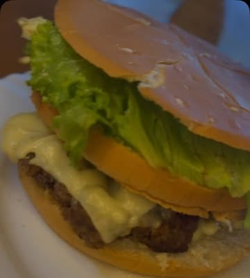
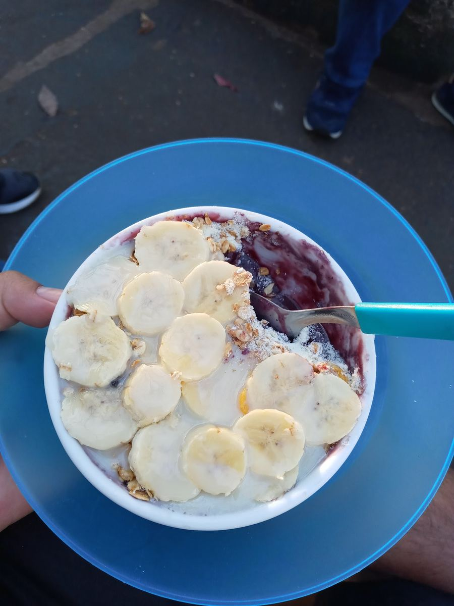
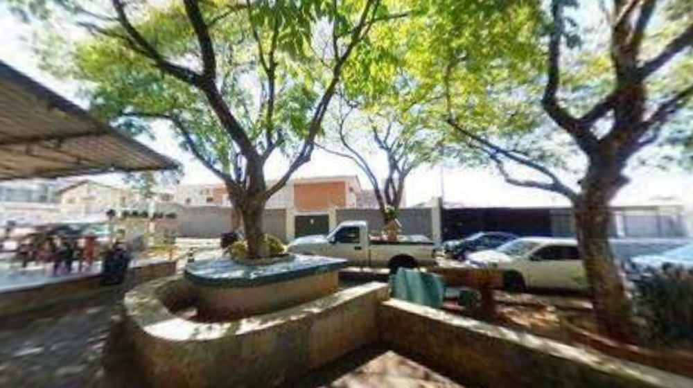
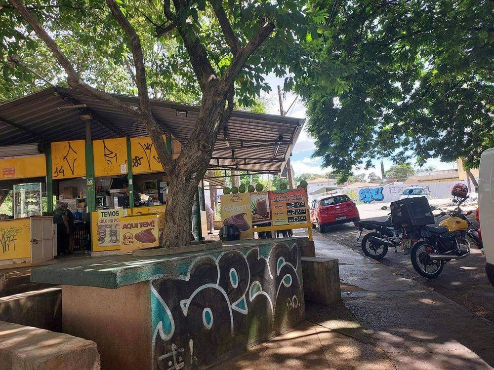

Pastéis
Massa crocante, frito na hora, com vinagrete fresquinho no balcão.
O quiosque amarelo debaixo das árvores, do lado do posto Ipiranga. Abre antes do sol, serve o pão de queijo mais falado da região e segura a fome de aluno, professor e de quem passa de carro.

As promoções que a Tropical solta no Instagram, organizadas num lugar só.
Valores e promoções mudam: confirme no WhatsApp ou no Instagram antes de vir.
Comida de rua bem feita, com preço que cabe no bolso de estudante.

Massa crocante, frito na hora, com vinagrete fresquinho no balcão.

O que fez a fama da Tropical entre a turma da Unicamp.

Hambúrguer, sanduíche de costela, lanche natural e dogão.

Na tigela ou no copo, com banana e granola.


Há anos no mesmo ponto, a Tropical virou parada fixa de quem estuda, trabalha ou passa por Barão Geraldo.
Delivery de pastel, lanche e açaí. Faça o pedido direto pelo WhatsApp.
Essa pastelaria é um clássico da Unicamp. Servindo diariamente desde os alunos até profissionais da região.Felipe · Google
Pastel frito na hora, vinagrete fresquinho, lugar estratégico em frente ao balão da Unicamp.Netto · Google
A promoção de combo de dois pastéis e um suco vale a pena.Avaliação no Google
| Segunda | 5h30 às 20h30 |
| Terça | 5h30 às 20h30 |
| Quarta | 5h30 às 20h30 |
| Quinta | 5h às 20h30 |
| Sexta | 4h30 às 20h30 |
| Sábado | 5h às 19h30 |
| Domingo | Fechado |
Rotatória da Unicamp, R. Eurico Wanderley de Moraes Carvalho, perto do posto Ipiranga · Cidade Universitária, Campinas